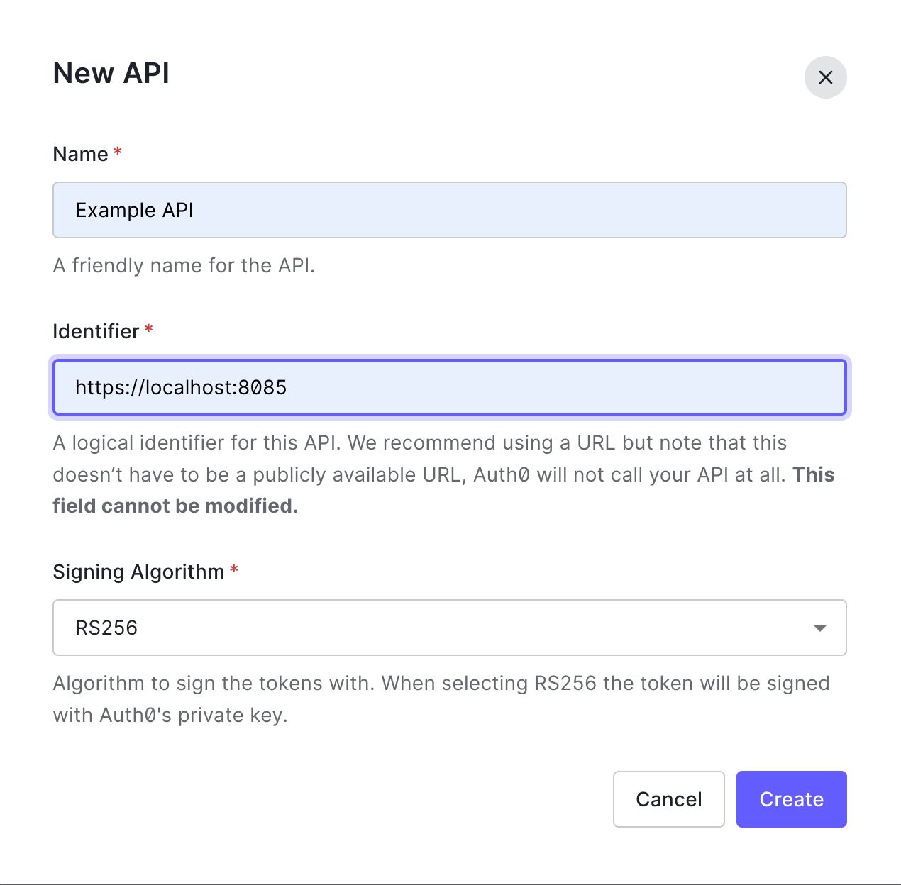
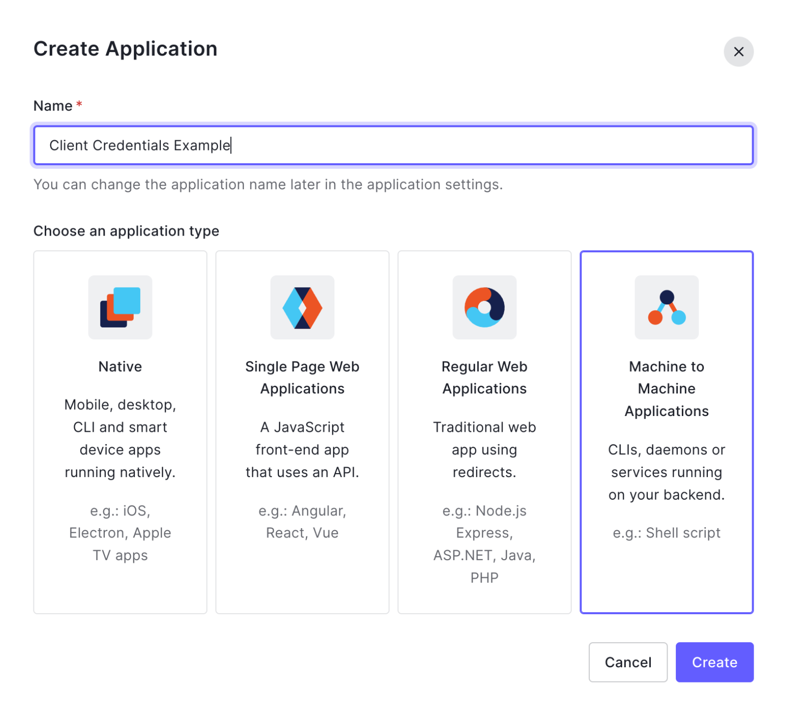
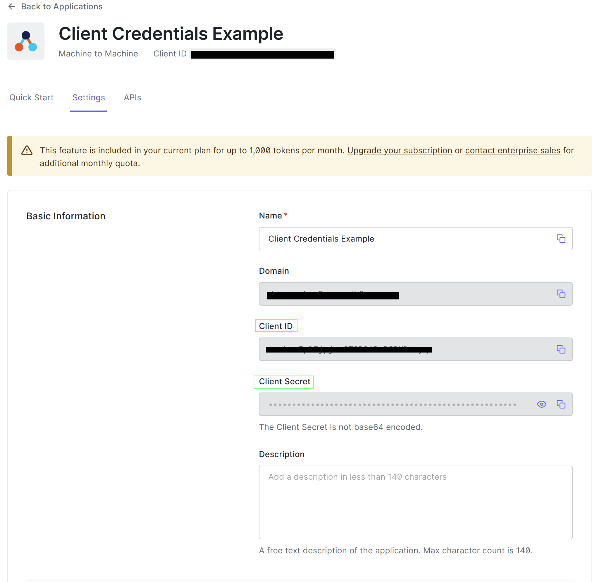

The Machine Authentication: Client Credentials
Let's suppose that you are building a microservice application or that you are build a service that will be invoked by another application. How do you ensure that only authorized services will be capable of access your resources?
One method to control that access is through client credentials. Client Credentials is an OAuth2 authentication grant intended to be used when a service wants to interact with other service with no user involved. It is typically used in backend to backend authentication and service platforms. The client credentials authentication and usage usually follows this flow:
{kind=link}
Fist of all, usually the Service B provides to Service A its credentials, a pair of client_id and client_secret that will be used by Service A to perform authentication and acquire an access token. Then, following the image above:
- In Step 1, the Service A will authenticate in the Authorization Server using a client_id and a client_secret invoking the /token endpoint. The full request will be explained further ahead.
- Step 2 illustrates the Authorization Server responding the authentication request successfully with the access_token present on the body. Any misconfiguration will result in a bad request error.
- In Step 3 Service A is allowed to invoke Service B using the access_token acquired in the previous step.
Technical Overview
Token Request
There are two simple ways of performing client credentials authentication. Their both require three attributes:
client_id: an identifier of the service or applicationclient_secret: the client_id's passwordgrant_type: the discriminator of which flow has to be applied to the authentication request. For client credentials authentication methos this attribute must be equal toclient_credentials
Those attributes can be submitted to token's endpoint using one of two forms:
Get to Know
More about Basic Authentication in this link
Token Response
A successful response of the Authorization Server will be like:
HTTP/1.1 200 OK
Content-Type: application/json;charset=UTF-8
Cache-Control: no-store
Pragma: no-cache
{
"access_token":"2YotnFZFEjr1zCsicMWpAA",
"token_type":"bearer",
"expires_in":3600
}
Where:
access_tokenis the authorization token which will be sent to Resource Owner through Authorization headerexpires_inis the time interval where the access token is validtoken_typeis the type of access token issued
Error response usually send status code 400 Bad Request following an error and a description in the body:
HTTP/1.1 400 Bad Request
Content-Type: application/json;charset=UTF-8
Cache-Control: no-store
Pragma: no-cache
{
"error":"invalid_request"
}
All default error codes and their meaning can be read here.
Hands-On
In practice, most authorization servers available out there supports client authentication, since it's covered in OAuth2 RFC. As example, we'll be using Auth0 as a platform, and Hydra from Ory as a self-hosted alternative while it is an open source application.
Ory Hydra Client Credentials
Info
Here will be using docker-compose, so, if you are not familiar with it, you can read more about it here.
Ory Hydra is an open source Authorization Server developed by Ory. So it can all authentication methods described by OAuth 2.0 and even OpenID Connect (and a lot of other things that we will cover later).
Firstly we create our Hydra service by running the following docker-compose:
version: "3.7"
services:
hydra:
image: oryd/hydra:v2.0.3
ports:
- "4444:4444" # Public port
- "4445:4445" # Admin port
- "5555:5555" # Port for hydra token user
command: serve -c /etc/config/hydra/hydra.yml all --dev
volumes:
- type: volume
source: hydra-sqlite
target: /var/lib/sqlite
read_only: false
- type: bind
source: ./hydra.yml
target: /etc/config/hydra/hydra.yml
environment:
- DSN=sqlite:///var/lib/sqlite/db.sqlite?_fk=true
restart: unless-stopped
depends_on:
- hydra-migrate
networks:
- intranet
hydra-migrate:
image: oryd/hydra:v2.0.3
environment:
- DSN=sqlite:///var/lib/sqlite/db.sqlite?_fk=true
command: migrate -c /etc/config/hydra/hydra.yml sql -e --yes
volumes:
- type: volume
source: hydra-sqlite
target: /var/lib/sqlite
read_only: false
- type: bind
source: ./hydra.yml
target: /etc/config/hydra/hydra.yml
restart: on-failure
networks:
- intranet
networks:
intranet:
volumes:
hydra-sqlite:
An updated version can be found here
Before running the docker-compose, we will need a configuration file as well. So in same folder, create a file named hydra.yml with the following content:
serve:
cookies:
same_site_mode: Lax
urls:
self:
issuer: http://127.0.0.1:4444
consent: http://127.0.0.1:3000/consent
login: http://127.0.0.1:3000/login
logout: http://127.0.0.1:3000/logout
secrets:
system:
- youReallyNeedToChangeThis
oidc:
subject_identifiers:
supported_types:
- pairwise
- public
pairwise:
salt: youReallyNeedToChangeThis
Warning
All hydra examples in this article are for demonstration purpose only. For production use please follow the recommendations at Security Architecture
So, now start the Hydra service running the docker-compose up command.
Once we have our service running, we need a way to create our client to perform our authentication. Ory offers SDKs for most of their components, including Hydra's. Here we'll use the Javascript SDK.
So create a node project and install Hydra's SDK by running npm install @ory/hydra-client --save and create a JS file like this:
/* uncomment if you're using commonjs
import pkg from "@ory/hydra-client";
const { OAuth2Api, Configuration } = pkg;
*/
import { OAuth2Api, Configuration } from "@ory/hydra-client"; // using module declarations
const main = async () => {
const hydraOauth2Admin = new OAuth2Api(
new Configuration({
basePath: "http://localhost:4445/",
})
);
const myClient = await hydraOauth2Admin.createOAuth2Client({
client_name: "my client",
client_secret: "my-client-secret",
token_endpoint_auth_method: "client_secret_post",
grant_types: ["client_credentials"],
});
console.log({
clientID: myClient.data.client_id,
clientSecret: myClient.data.client_secret,
});
};
main();
In the code above, we initialize OAuth2.0 Hydra API that allows us to create clients.
Then we create a client passing a simple secret and tell it that we'll use it to perform client authentication by passing grant type client_credentials.
As explained above there are two ways of performing a client authentication: through body parameters or through Basic Authentication. The property token_endpoint_auth_method is used to tell which one we'll be using.And basically there are 4 values allowed:
client_secret_post: when client's id and secret are passed through the bodyclient_secret_basic: when client credentials are passed through Basic authentication headerprivate_key_jwt: when the client use signed JWT to pass their credentialsnone: when the client is public and does not have a secret
By running the script, the expected result is something like this:
We achieve the same result as above invoking the Admin API directly by cURL:
curl --location --request POST 'http://localhost:4445/admin/clients' \
--header 'Content-Type: application/json' \
--header 'Accept: application/json' \
--data-raw '{
"client_name": "my client",
"client_secret": "my-client-secret",
"token_endpoint_auth_method": "client_secret_post",
"grant_types": [
"client_credentials"
]
}'
And that we'll be our authentication credentials.
Finally, to perform client credentials authentication, we invoke the Hydra's public API, which contains all OAuth2.0 and OIDC endpoints. In this case, we'll invoke /token to generate our access token, like the following:
curl --location --request POST 'http://localhost:4444/oauth2/token' \
--header 'Content-Type: application/x-www-form-urlencoded' \
--header 'Accept: application/json' \
--data-urlencode 'grant_type=client_credentials' \
--data-urlencode 'client_id=<client_id>' \
--data-urlencode 'client_secret=my-client-secret'
And that's it, the expected result is our access_token:
{
"access_token": "ory_at_A8e1ENqZN8dLfWiOSOl2XC229z2yRhI73XG8crTkcqk.64PUN9LzIN8cnk2wvep65cMJmp57Mnw5RNg3HpxunvM",
"expires_in": 3599,
"scope": "",
"token_type": "bearer"
}
In [this] article I cover the steps of how to use access tokens and how validate them in your application using OAuth2.0 Introspection Endpoint and Ory Oathkeeper.
Auth0 Client Credentials
- Create an account in Auth0
- Create an Example API in Auth0 console, like this: 
- Then create an Application and select its type as "Machine To Machine Applications", like this: 
- Then select Example API
- At last, confirm the Application creation clicking in "Authorize" button
{kind=link}
{kind=link}
Then, a quick start page will be prompted, showing how to perform the client authentication.
In the Settings section, there will be two fields, one containing the Client ID and other containing the Client Secret. Their both will be used to perform our authentication.

{kind=link}
Using cURL, replace your Auth0 domain, client ID and Client Secret:
curl --request POST \
--url {{YOUR_AUTH0_DOMAIN}}/oauth/token \
--header 'content-type: application/json' \
--data '{"client_id":"{{CLIENT_ID}}","client_secret":"{{CLIENT_SECRET}}","audience":"https://localhost:8085","grant_type":"client_credentials"}'
Example:
curl --request POST \
--url https://dev-mgxkon0z.us.auth0.com/oauth/token \
--header 'content-type: application/json' \
--data '{"client_id":"avsLmrEplIjpjemST3R31BvBSBHDwtyq","client_secret":"h5K41REVT8bzxdEeXVaCHlTwWophz9VRP5iDqj2iuXxXDhj8TMXaOvgbgAixdpvS","audience":"https://localhost:8085","grant_type":"client_credentials"}'
Then you should get a response like:
The field access_token that will be used as authorization in the requests to Service B.
The usage and validation of access_token will be covered in the next article.
That's it for now :)